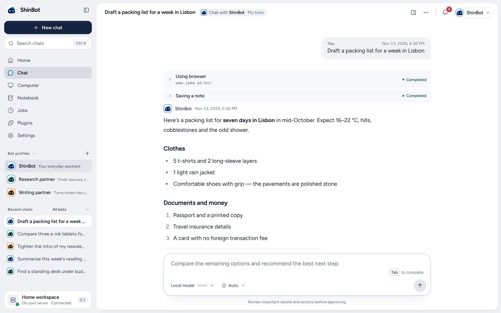
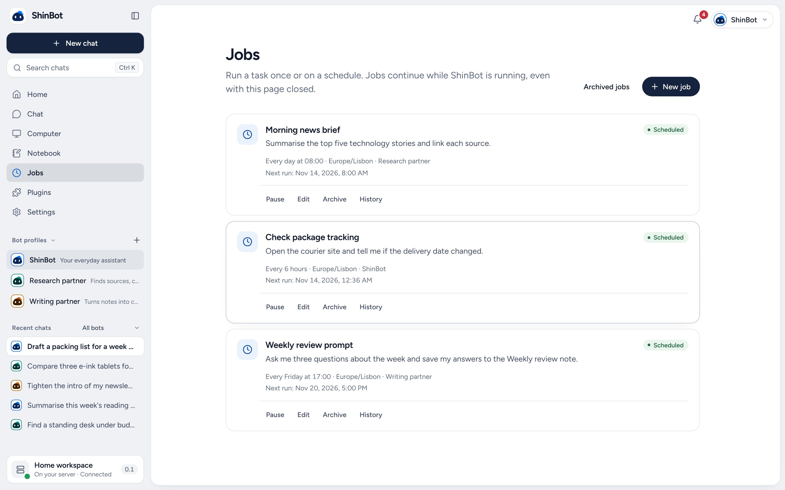

A browser you can share
Watch your bot use websites, take over when needed, and keep your sign-ins between tasks. Browser profiles can belong to one bot or be shared.
Browse the web, keep useful notes and take care of recurring tasks. ShinBot runs on your computer or server, with the model you choose.

One place for your bots and their conversations.View full size

Keep the useful work in notes you can edit.View full size

Set a routine and check back on what it did.View full size
Research a purchase. Prepare a brief. Keep a project moving. Start a conversation and give your bot the tools it needs.
Try a first taskWatch your bot use websites, take over when needed, and keep your sign-ins between tasks. Browser profiles can belong to one bot or be shared.
Let a bot remember your preferences and corrections. Review or forget saved facts, and keep longer work in the notebook.
Schedule recurring tasks or track a longer goal on the board. See each run, its result and its limits. Your server keeps the work going.
Give each bot a role and a model. Start from a template, make it your own, or share a bot group with someone else.
Set which tools can act without asking. Review pending actions in the conversation, inspect an extension before activating it, and take control of the browser whenever you need to.
Conversations, files, memories and browser profiles stay on your server. Your chosen model provider receives the context needed for each task. You can also connect a compatible local model.
Back up your data and roll back updatesConnect a tool, teach a procedure, or ask ShinBot to build an extension. Keep it for one bot or share it across your bots.
Connect GitHub, Telegram and other tools. Add an MCP server or a plugin repository of your own.
Connect your toolsInstall skills with npx skills. Bots can also propose reusable procedures from work they have tested.
Save a useful setup as a template. Share individual bots or a group with its roles and browser settings.
Explore templatesStart Docker, then run this in your terminal. ShinBot opens in your browser.
uvx --prerelease allow shinbot startSix parts: an agent powered by Pi Durable, a Python gateway, a Computer with a persistent browser, a notebook, scheduled jobs and plugins.
Docker keeps the services together. Your data survives package reinstalls. Scheduled work needs the host to stay running, and model access is separate from ShinBot.
Read the architecture